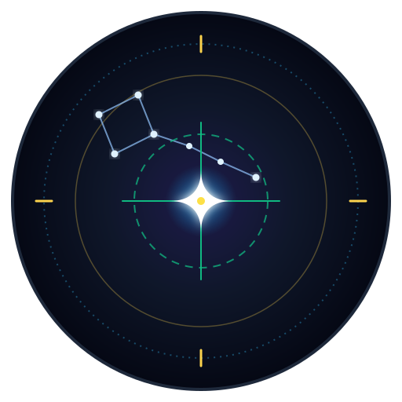

Sirius
α CMa • Mag -1.46 • 8.6 ly
Tap to inspect ➔
Target: Polaris
Turn Left 42°, Tilt Up 15°
✕

Star Finder
v3.0
Celestial Guide
✕
☄️
🗂️
中文
Install
AR Camera
San Mateo (37.6°N)
🌍
Earth
🏙️
City (≤3.2m)
Az:
180°
Alt:
30°
FOV:
60°
Sirius
α CMa
Canis Major • Mag -1.46
Brightest star in Earth’s night sky.
Sirius
α CMa
Canis Major • A1V
Aim Here
✕
Visual Mag
-1.46
Distance
8.6 ly
Spectral Type
A1V
Altitude
28.4°
🔬
Astrophysical Facts
📖
Cultural Lore & Mythology
🏛️ Western Mythology
🐉 Chinese Astronomy
Stargazing Location
✕
Observation Planet
Earth 🌍
🌍 Earth (地球)
🔴 Mars (火星)
Viewing from Earth: Moon, Sun & 5 planets visible.
Auto GPS Locate
City Presets
Light Pollution & Sky Visibility
🏙️
City
≤ 3.2m
Heavy light pollution. Only planets, Moon, Sun & bright stars.
🏡
Suburb
≤ 4.8m
Moderate skyglow. Major constellations clearly visible.
🌌
Desert
≤ 6.5m
Pristine dark sky. Thousands of faint stars & luminous Milky Way.
✨
Ignore Ambient Light
Pristine
Bypass all room, city & environment light. Full pristine dark sky with thousands of stars & radiant Milky Way.
Ignore Ambient Light
Display ideal dark sky bypassing ambient/city light
📷
Estimate Light via Camera
Analyze live environment luminance via camera
Meter
Sensor Smoothing
Silky Smooth (防抖稳定)
Compass Calibration (微调)
-2°
0.0°
+2°
Reset
Star Finder
v3.0
(Spacecraft Fleet, Celestial Events & View Layers)
🗂️
Sky View Layers & Filters
Select visible objects to avoid crowding the sky
✕
Quick Presets
🌟 All Layers
🔭 Stargazing Only
🛰️ Spacecraft & Probes
🌌 Minimalist Night
✨
Major Navigational Stars
50+ brightest navigational stars
📐
Constellation Lines
Geometric stick figures & celestial lore
🪐
Solar System Planets & Moon
Sun, Moon phases, Mercury, Venus, Mars, Jupiter, Saturn
🛰️
Man-Made Spacecraft & Probes
ISS, Hubble, Tiangong, JWST, Voyager 1 & 2
🛸
Low Earth Orbit (LEO)
ISS (418km), Hubble (525km), Tiangong (390km)
✨
Lagrange L2 & Interstellar Probes
JWST (1.5M km), Voyager 1 (24.5B km), Voyager 2 (20.4B km)
🌌
Milky Way Stream
Smooth continuous galactic starlight ribbon
🌐
Horizon & Azimuth/Alt Grid
Cardinal compass (N, E, S, W) and altitude circles
🏷️
Star Names & Distance Badges
Text labels and orbit distances beside objects
✨
Ignore Ambient Light
Pristine dark sky bypassing room, city and camera light estimation
☄️
Upcoming Celestial Events
Curated astronomical wonders & meteor showers. Tap to jump & aim!
✕
All Events
⚡ Happening Soon
⭐ Rare Wonders
🌠 Meteor Showers
🌑 Eclipses
🪐 Planet Oppositions
Install Star Finder App
✕
1
Tap the Share button in Safari toolbar
2
Scroll down and tap "Add to Home Screen"
3
Tap "Add" in top-right corner to finish install